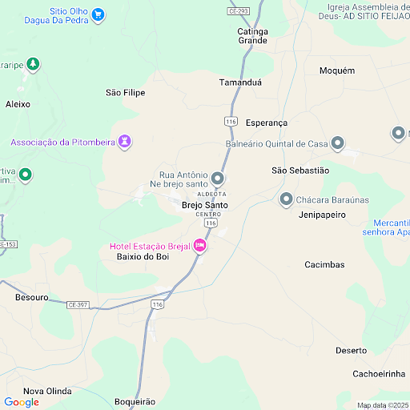
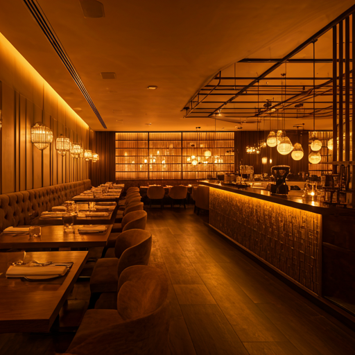
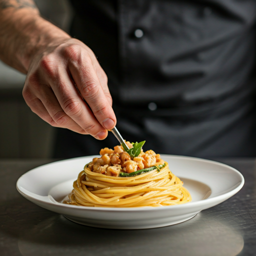
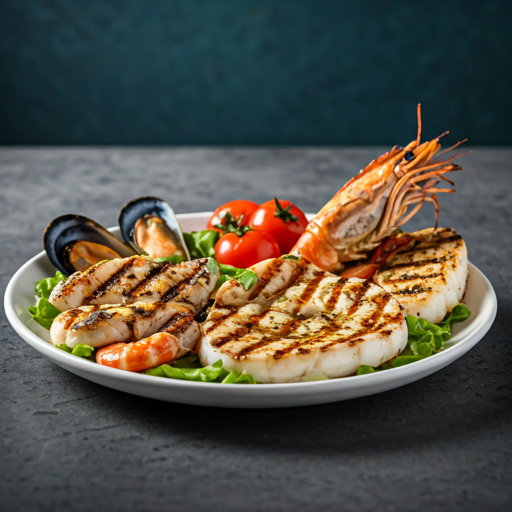
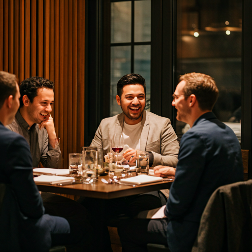
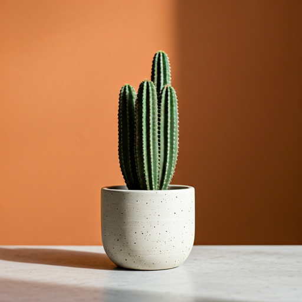
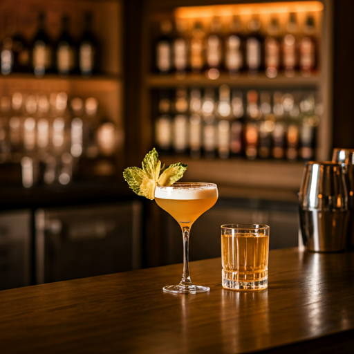
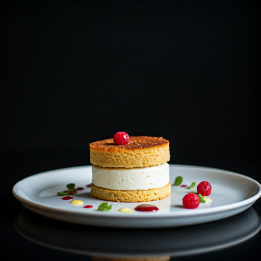
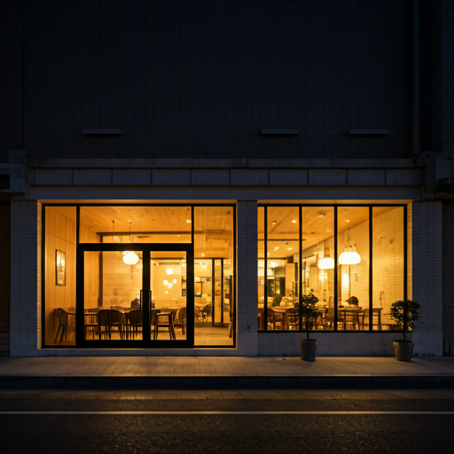

A alma da Itália com o tempero do Sertão
Nossa paixão é unir a tradição e a criatividade, combinando técnicas clássicas da culinária italiana com os ingredientes frescos e autênticos do Nordeste, criando uma experiência gastronômica inesquecível.
Massas Artesanais
Feitas diariamente em nossa casa.
Frutos do Mar Frescos
Selecionados dos melhores fornecedores.
Ingredientes Locais
Valorizamos os produtores da nossa região.
Experiência Autoral
Pratos criados com paixão pelo nosso chef.

Nosso Canto no Cariri
Rua das Acácias, 123 - Centro, Juazeiro do Norte - CE
Jantar – Sexta e Sábado
Horário: 18h às 23h
Um Pouco do Nosso Ambiente








O que nossos clientes dizem
"Uma experiência culinária inesquecível! A mistura de sabores é surpreendente e deliciosa. Voltarei com certeza."
Joana Silva
"O ambiente é tão aconchegante quanto os pratos são saborosos. A melhor massa que já comi no Ceará."
Marcos Pereira
"Cada detalhe, da decoração ao prato, mostra o carinho e a qualidade. Atendimento impecável. Recomendo!"
Carolina Andrade